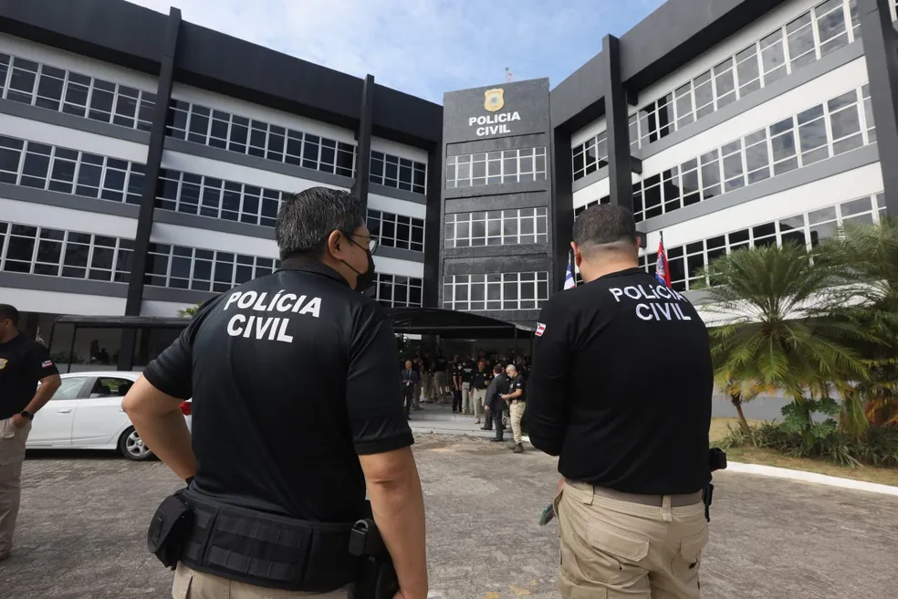

Repórter Davi
Notícias de Feira de Santana e Região
Repórter Davi
Notícias de Feira de Santana e Região
Restos mortais foram encontrados na tarde deste domingo (3). Investigação deve esclarecer causa da morte.
Publicado em 04/05/2026

Cristo da Barra, em Salvador — Foto: Valma Silva/g1
Uma ossada humana foi encontrada no bairro da Barra, em Salvador, na tarde deste domingo (3). Informações iniciais apontam que os restos mortais estavam dentro de um tanque, em um terreno nas proximidades do Morro do Cristo.
Ainda não se sabe desde quando a ossada estava lá nem as circunstâncias da morte.
O fato foi confirmado pela Polícia Militar, acionada através do Centro Integrado de Comunicações para averiguar a denúncia de que haviam restos mortais no local.
Ao encontrar a ossada, os agentes acionaram o Departamento de Polícia Técnica para realização dos exames que devem identificar a vítima. Segundo a Polícia Civil, o caso é acompanhado pelo Departamento de Homicídios e Proteção à Pessoa (DHPP).

DHPP investiga crime Polícia Civil da Bahia — Foto: Divulgação/Polícia Civil da Bahia